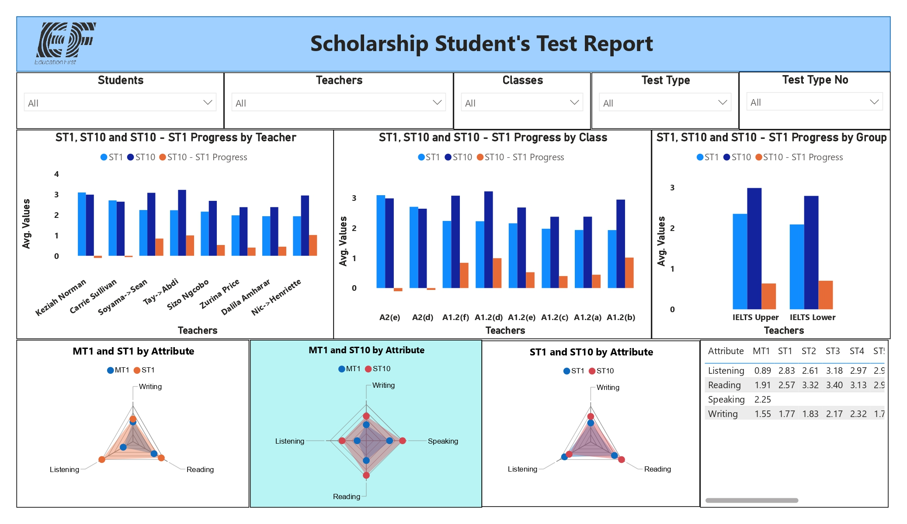
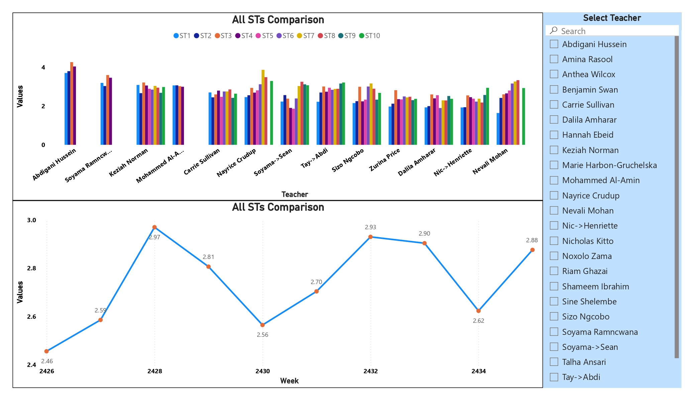
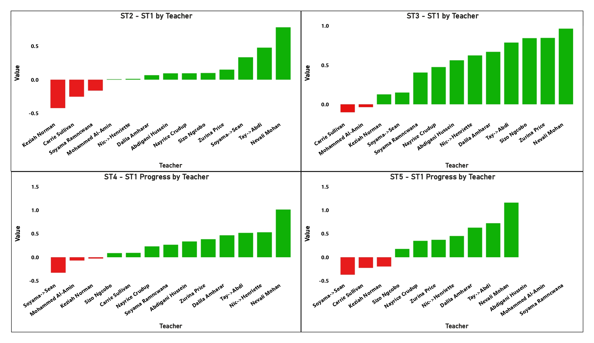

Fragmented Weekly Test Data
Multiple instructors maintained separate sheets across a rigid ten-week testing cycle, preventing a unified view of student progress.
Developed an interactive Power BI analytics platform for a high-stakes international scholarship program, centralizing fragmented weekly test data and enabling academic leaders to track student growth, compare instructional performance, identify skill gaps, and intervene before students fell behind.
Student test data was distributed across independently managed weekly spreadsheets, creating serious visibility gaps in a scholarship program where funding, retention, and institutional reputation depended on student success.
Multiple instructors maintained separate sheets across a rigid ten-week testing cycle, preventing a unified view of student progress.
Academic leaders could not quickly identify slipping students, weak cohorts, or underperforming instructional groups.
Struggling scholarship students could fall behind unnoticed until the program was too advanced for effective intervention.
Leaders lacked a standardized framework for comparing progress across teachers, classes, and student groups.
Listening, Reading, Speaking, and Writing performance could not be tracked consistently across milestones.
A structured Power BI reporting solution transformed raw weekly test scores into longitudinal, teacher-level, class-level, group-level, and skill-level intelligence.
Ingested, cleaned, standardized, and unpivoted fragmented Excel test datasets into one analytical structure.
Organized students, teachers, classes, groups, tests, weeks, and language attributes for scalable analysis.
DAX calculated ST10–ST1 progress, incremental STn–ST1 deltas, milestone growth, and average attribute values.
Teacher → Class → Group navigation supported executive auditing and granular academic review.
Listening, Reading, Speaking, and Writing trends were compared across Mock Tests and Sunday Tests.
An interactive trend visual compared weekly performance across all Sunday Tests and instructional cohorts.
Slicers for teachers, classes, students, and test types enabled focused intervention and side-by-side comparison.
The reporting model preserved the complete Sunday Test sequence from ST1 through ST10.
Listening, Reading, Speaking, and Writing were benchmarked continuously across testing milestones.
Average Writing performance increased from 1.55 at the Initial Mock Test to 2.32 by Sunday Test 4—a gain of 0.77 points.
Teacher, Class, and Group analysis connected executive oversight to targeted student support.
Centralized progress visibility enabled academic directors to identify struggling students before scholarship cycles concluded.
Institutional leaders could compare classes and instructors, identify stronger teaching patterns, and scale successful methods.
Granular language-attribute analysis exposed where students needed focused academic support.
Disjointed instructor-managed spreadsheets were replaced by one consistent source of performance intelligence.
Quantification note: The 49.7% Writing improvement is calculated from the documented increase from 1.55 to 2.32. No unsupported financial or retention claims were added.
Fragmented weekly test records are transformed into a governed model for longitudinal, cohort, teacher, and skill-level analysis.
Mock and Sunday Test spreadsheets
Clean, unpivot, and standardize
Students, teachers, classes, groups, tests
ST10–ST1, incremental deltas, skill averages
Identify risk and guide academic support
The delivery flow converts weekly academic records into targeted intervention and instructional intelligence.



Replace this placeholder with the public Power BI embed URL after publishing the report.
The repository contains project documentation, dashboard screenshots, Power BI implementation details, and supporting analytical assets.
Discover more industry transformation and enterprise analytics projects.